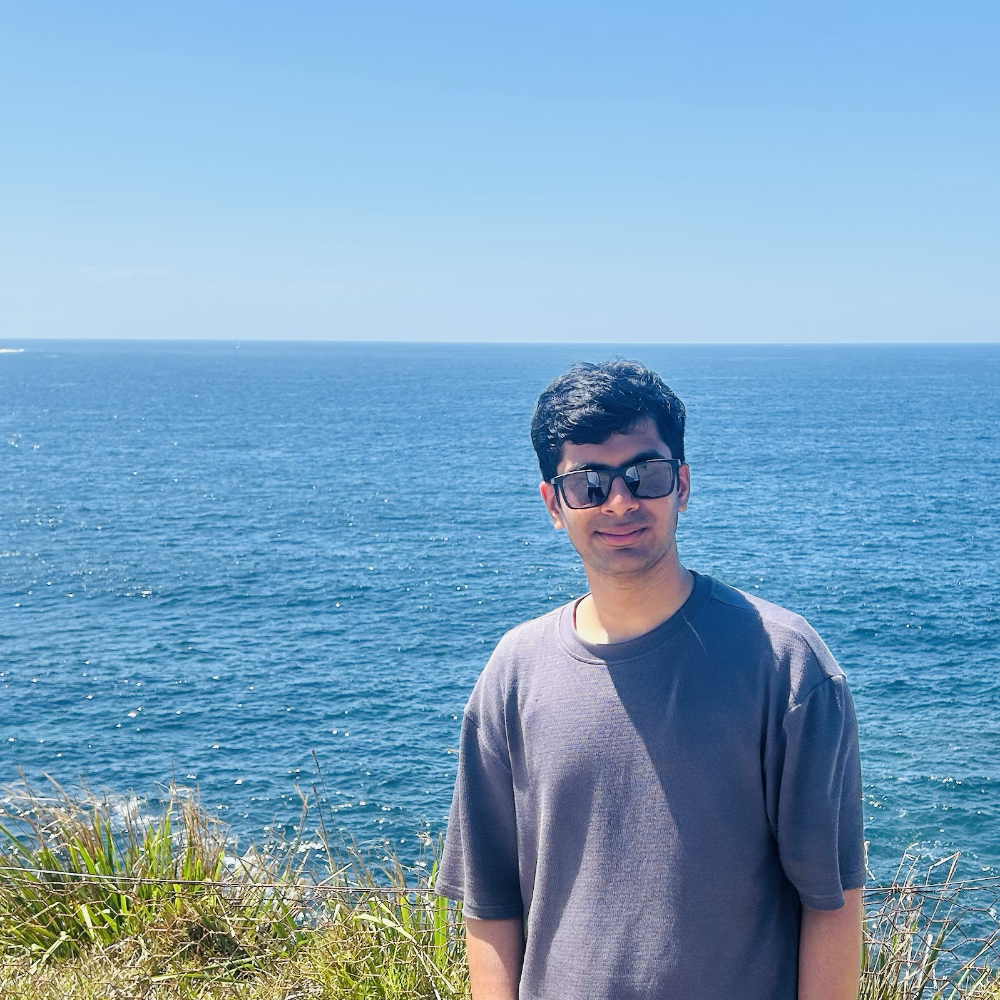

Hello, I'm
// friends call me Teja
Postgraduate Student @ University of Sydney
Computer Science — Data Science & AI · Cybersecurity
I'm a first year postgraduate student at the University of Sydney, pursuing a Master of Computer Science with dual specialisations in Data Science & AI and Cybersecurity.
I spent the better part of last year at ISRO, India's national space agency, building neural models for satellite re-entry prediction and software tools that are now part of daily operational workflows.
I care about writing software that is correct, fast, and purposefully designed. Outside of research, I build independent products. karman, a productivity app with 5 000+ downloads on the Play Store, is one of them.

University of Sydney · Sydney, Australia
Specialisations: Data Science & AI · Cybersecurity
Visvesvaraya Technological University · India
Coursework
Data Structures & Algorithms · Operating Systems · Computer Architecture · Computer Networks · Object Oriented Programming
Indian Space Research Organization (ISRO) · Bengaluru, India
Indian Space Research Organization (ISRO) · Bengaluru, India
Orbital Retrieval & Behaviour Inspection Tool for TLEs
A graphical tool for fetching real time satellite data from public domain sources, plotting orbital information, computing ground traces, propagating orbits and exporting data in formats like CSV for downstream time series work. A specialised variant with additional algorithm implementations is in active use at ISRO for rapid orbital health checks.
From scratch ML optimiser at the system level
Implemented vanilla, momentum, and Nesterov gradient descent from scratch in C++, benchmarked across three classic optimisation landscapes: quadratic, Rosenbrock, and Himmelblau functions. Nesterov converged in up to 76% fewer iterations and ran ~8× faster than vanilla gradient descent. Visualisation built in Python.
Scientific Reports, Nature Portfolio
Applied machine learning and geographic information systems to identify optimal soil growth zones for 150 vulnerable medicinal herb species. Integrated UN FAO soil datasets with geospatial features and trained a decision tree model to classify 28 distinct subregions, achieving 99.01% soil classification accuracy and 98.76% subregion classification accuracy.
IC2E3-2023 · National Institute of Technology (NIT) Uttarakhand
Used a random forest classifier on soil and geospatial data to identify and recommend cultivation zones for medicinal plants across Karnataka, India. Presented at the IC2E3-2023 international conference at National Institute of Technology, Uttarakhand, supporting conservation and precision agriculture efforts.
Happy to chat about research, software, or opportunities.